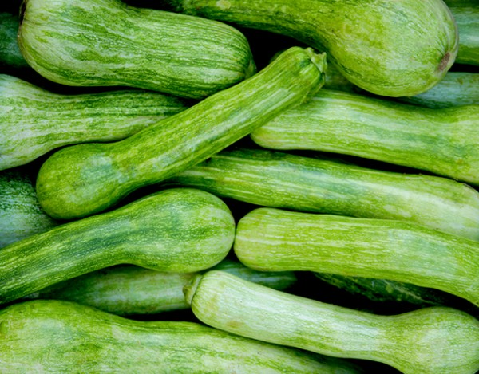
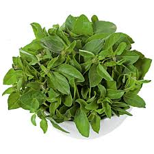
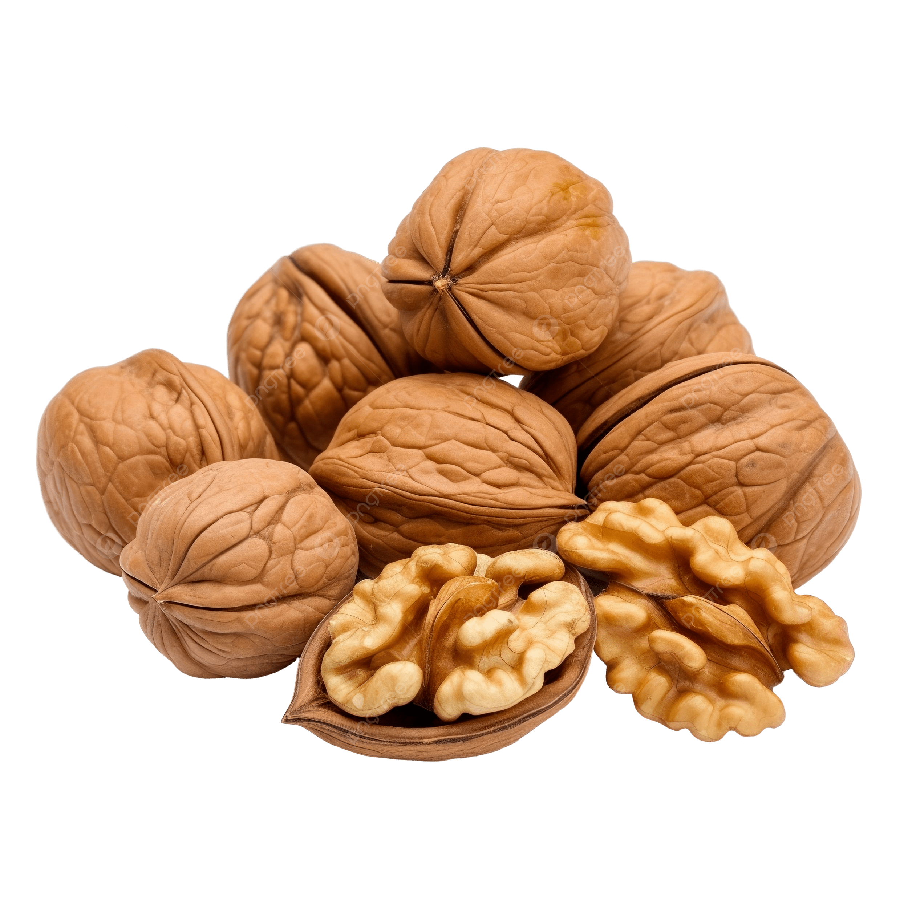
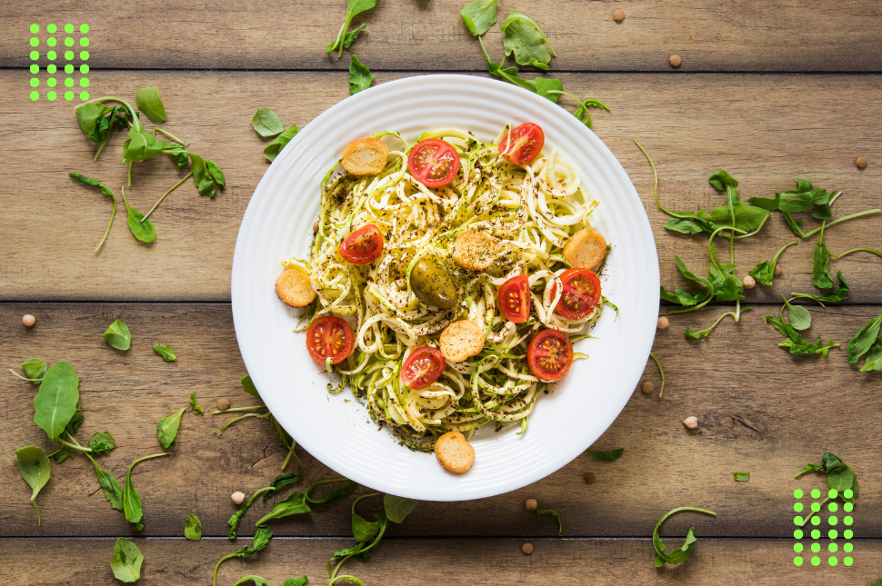

Espaguete de Abobrinha ao Pesto
Leveza em forma de massa. Lâminas finas de abobrinha da estação servidas com um pesto artesanal de manjericão fresco e nozes.
Ingredientes:
Para o "Espaguete":
-

2 abobrinhas médias e firmes -
 1 colher de chá de sal marinho (para desidratar)
1 colher de chá de sal marinho (para desidratar)
-
 1 fio de azeite de oliva extra virgem
1 fio de azeite de oliva extra virgem
Para o Pesto de Manjericão e Nozes:
-

2 xícaras de folhas de manjericão fresco -

1/2 xícara de nozes levemente tostadas -
1/2 xícara de azeite extra virgem
-
 1 dente de alho pequeno (sem o germe)
1 dente de alho pequeno (sem o germe)
-
 2 colheres de sopa de levedura nutricional
2 colheres de sopa de levedura nutricional
-
 1 colher de sopa de suco de limão siciliano
1 colher de sopa de suco de limão siciliano

Modo de Preparo
O Preparo da "Massa":
- Lave as abobrinhas e, com um espiralizador ou descascador, faça lâminas finas até chegar ao miolo com sementes.
- Coloque em um escorredor com o sal por 10 minutos para liberar o excesso de umidade.
- Enxágue rapidamente e seque muito bem com um pano de prato limpo — isso garante que o molho adira bem à abobrinha.
O Pesto Artesanal:
- No processador, pulse as nozes, o alho e a levedura até formar uma farofa grossa.
- Adicione o manjericão e o limão. Vá vertendo o azeite em fio enquanto pulsa, até obter uma textura rústica e vibrante.
- Tempere com sal e pimenta a gosto.
Montagem:
- Em uma frigideira larga com um fio de azeite bem quente, salteie a abobrinha por apenas 1 minuto (ela deve ficar al dente).
- Desligue o fogo e adicione o pesto. O calor residual é suficiente para liberar os aromas sem cozinhar o manjericão.
- Sirva imediatamente, decorando com nozes picadas e folhas frescas.